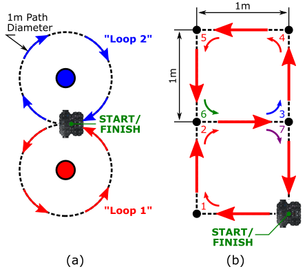

In this first AMR31001 'Industry 4.0' ROS Lab you will learn how to use ROS (the Robot Operating System) to control a robot's motion.
ROS is an open-source, industry-standard robot programming framework, used in a range of industries such as agriculture, warehouse and factory automation and advanced manufacturing (the robot arms at the AMRC, for instance, are programmed and controlled using ROS!)
ROS allows us to programme robots using a range of different programming languages (including C++, Java, MATLAB etc.), but we'll be using Python for these labs. In addition to this, ROS runs on top of a Linux operating system called 'Ubuntu', and so we'll also learn a bit about how to use this too.
In this lab you'll learn how to use ROS to make a robot move, and we'll also look at how to create our own basic ROS application (or 'Node'), using Python.
Before you do anything, you'll need to get your robot up and running, and make sure ROS is launched.
Exercise 1: Launching ROS and Making the Robot Move¶
You should have already been provided with a Robot and a Laptop (in fact, you're probably already reading this on the laptop!)
First, identify the robot that you have been provided with. Each of our robots are uniquely named: dia-waffleX, where X is the 'Robot Number' (a number between 1 and 50). Check the label printed on top of the robot to find out which one you have!
Open up a terminal instance on the laptop, either by pressing the Ctrl+Alt+T buttons on your keyboard all at the same time, or by clicking the Terminal App icon in the favourites bar on the left-hand side of the desktop:
We'll refer to this terminal as TERMINAL 1.
In TERMINAL 1 type the following command to pair the laptop and robot, so that they can work together:
TERMINAL 1:
waffleXpair
... replacing X with the number of the robot that you have been provided with.
Enter the password for the robot when requested (we'll tell you what this is in the lab).
You may see a message like this early on in the pairing process:
If so, just type yes and then hit Enter to confirm that you want to continue.
Once the pairing process is finished you should see a message saying pairing complete, displayed in blue in the terminal.
Then, in the same terminal (TERMINAL 1), enter the following command:
TERMINAL 1:
waffleXterm
(again, replacing X with the number of your robot).
Any text that was in the terminal should now disappear, and a green banner should appear across the bottom of the terminal window:
This is a terminal instance running on the robot, and any commands that you enter here will be executed on the robot (not the laptop!)
Now, launch ROS on the robot by entering the following command:
TERMINAL 1:
roslaunchtuos_tb3_toolsros.launch
Tip
To paste text into a Linux terminal you'll need to use the Control + Shift + V keyboard keys: Ctrl+Shift+V
After a short while, you should see a message like this:
[INFO] [#####] Calibration End
dia-waffleX is up and running!
ROS is now up and running on the robot, and we're ready to go!
You should leave TERMINAL 1 alone now, just leave it running in the background for the rest of the lab.
Next, open up a new terminal instance on the laptop (by pressing Ctrl+Alt+T or clicking the Terminal App desktop icon, as you did before). We'll call this one TERMINAL 2.
In TERMINAL 2 enter the following command:
TERMINAL 2:
rosrunturtlebot3_teleopturtlebot3_teleop_key
Follow the instructions provided in the terminal to drive the robot around using specific buttons on the keyboard:
Enter Ctrl+C in TERMINAL 2 to stop the Teleop node when you've had enough fun.
ROS applications are organised into packages. Packages are basically folders containing scripts, configurations and launch files (ways to launch those scripts and configurations).
Scripts tell the robot what to do and how to act. In ROS, these scripts are called nodes. ROS Nodes are executable programs that perform specific robot tasks and operations. These are typically written in C++ or Python, but it's possible to write ROS Nodes using other programming languages too.
In Exercise 1 you actually launched a whole range of different nodes on the ROS Network (the wireless link between your robot and laptop) using the following two commands:
roslaunch tuos_tb3_tools ros.launch (on the robot, in TERMINAL 1).
rosrun turtlebot3_teleop turtlebot3_teleop_key (on the laptop, in TERMINAL 2).
The first of the above was a roslaunch command, which has the following two parts to it (after the roslaunch bit):
roslaunch{[1]Packagename}{[2]Launchfile}
Part [1] specifies the name of the ROS package containing the functionality that we want to execute. Part [2] is a file within that package that tells ROS exactly what scripts ('nodes') that we want to launch. We can launch multiple nodes at the same time from a single launch file.
The second command was a rosrun command, which has a structure similar to roslaunch:
rosrun{[1]Packagename}{[2]Nodename}
Here, Part [1] is the same as the roslaunch command, but Part [2] is slightly different: {[2] Node name}. Here we are directly specifying a single script that we want to execute. We therefore use rosrun if we only want to launch a single node on the ROS network (turtlebot3_teleop_key in this case, which is a Python script).
Post-lab Quiz
What were the names of the two packages that we invoked in Exercise 1?
Exercise 2: Seeing the Waffle's Sensors in Action!¶
Our Waffles have some pretty sophisticated sensors on them, allowing them to "see" the world around them. We won't really make much use of these during this lab, but this next exercise will allow you to see how the data from these devices could be used to help our robots do some very advanced things (with some clever programming, of course!)
There shouldn't be anything running in TERMINAL 2 now, after you closed down the Teleop node at the end of the previous exercise (Ctrl+C). Return to this terminal and launch the rqt_image_view node:
TERMINAL 2:
rosrunrqt_image_viewrqt_image_view
Post-lab Quiz
We're using rosrun here again, what does this mean?
Why did we have to type rqt_image_view twice?
A new window should open. Maximise this (if it isn't already) and then select /camera/color/image_raw from the dropdown menu at the top-left of the application window.
Live images from the robot's camera should now be visible! Stick your face in front of the camera and see yourself appear on the laptop screen!
Close down the window once you've had enough. This should release TERMINAL 2 so that you can enter commands in it again.
The camera on the robot is quite a clever device. Inside the unit is two separate image sensors, giving it - effectively - both a left and right eye. The device then combines the data from both of these sensors and uses the combined information to infer depth from the images as well. Let's have a look at that in action now...
In TERMINAL 2 enter the following command:
TERMINAL 2:
roslaunchtuos_tb3_toolsrviz.launch
This will launch an application called RViz, which is a handy tool that allows us to visualise the data from all the sensors on-board our robots. When RViz opens, you should see something similar to the following:
The strange wobbly sheet of colours in front of the robot is the live image stream from the camera with depth applied to it at the same time. The camera is able to determine how far away each image pixel is from the camera lens, and then uses that to generate this 3-dimensional representation. Nice eh!
Again, place your hand or your face in front of the camera and hold steady for a few seconds (there may be a bit of a lag as all of this data is transmitted over the WiFi network). You should see yourself rendered in 3D in front of the robot!
In RViz you may have also noticed a lot of red dots scattered around the robot. This is a representation of the laser displacement data coming from the LiDAR sensor (the black device on the top of the robot). The LiDAR sensor spins continuously, sending out laser pulses into the environment as it does so. When a pulse hits an object it is reflected back to the sensor, and the time it takes for this to happen is used to calculate how far away the object is.
The LiDAR sensor spins and performs this process continuously, so a full 360° scan of the environment can be generated. This data is therefore really useful for things like obstacle avoidance and mapping. We'll have a quick look at the latter now.
Close down RViz (click the "Close without saving" button, if asked).
Head back to TERMINAL 2 and run the following command:
TERMINAL 2:
roslaunchturtlebot3_slamturtlebot3_slam.launch
A new RViz screen will open up, this time showing the robot from a top-down view, and with the LiDAR data represented by green dots instead.
Underneath the green dots you should notice black lines forming. ROS is using a process called SLAM (Simultaneous Localisation and Mapping) to generate a map of the environment, using the data from the LiDAR sensor.
Open up a new terminal instance now, we'll call this one TERMINAL 3. Launch the Teleop node in this one, as you did earlier:
TERMINAL 3:
rosrunturtlebot3_teleopturtlebot3_teleop_key
Drive the robot around a bit and watch how the map in RViz is updated as the robot explores new parts of the environment.
Enter Ctrl+C in TERMINAL 3 and then close down this terminal window, we won't need it any more.
Close down the RViz window, but keep TERMINAL 2 open for the next exercise...
We've now used both roslaunch and rosrun to launch ROS applications. These are both ROS command-line tools, and there are many others at our disposal as robotics engineers as well.
Using rosrun and roslaunch, as we have done so far, it's easy to end up with a lot of different processes or ROS Nodes running on the network, some of which we will interact with, but others may just be running in the background. It is often useful to know exactly what is running on the ROS network, and there are a number of ways to do this.
There shouldn't be anything running in TERMINAL 2 now, so return to this terminal and use the rosnode command to list the nodes that are currently running on the robot:
TERMINAL 2:
rosnodelist
You should see a list of 7 items.
We can visualise the connections between the active nodes by using a ROS node called rqt_graph. Launch this as follows:
TERMINAL 2:
rosrunrqt_graphrqt_graph
In the window that opens, select Nodes/Topics (active) from the dropdown menu in the top left.
What you should then see is a map of all the nodes in the list from above (as ovals), and arrows to illustrate the flow of information between them. This is a visual representation of the ROS network!
Items that have a rectangular border are ROS Topics. ROS Topics are essentially communication channels, and ROS nodes can read (subscribe) or write (publish) to these topics to access sensor data, pass information around the network and make things happen.
A ROS Robot could have hundreds of individual nodes running simultaneously to carry out all its necessary operations and actions. Each node runs independently, but uses ROS communication methods to communicate and share data with the other nodes on the ROS Network.
Publishers and Subscribers: A ROS Communication Method¶
ROS Topics are key to making things happen on a robot. Nodes can publish (write) and/or subscribe to (read) ROS Topics in order to share data around the ROS network. Data is published to topics using ROS Messages. We were actually publishing messages to a topic when we made the robot move using the Teleop node in the previous exercises.
Much like the rosnode list command, we can use rostopic list to list all the topics that are currently active on the network.
Close down the rqt_graph window if you haven't done so already. This will release TERMINAL 2 so that we can enter commands in it again. Return to this terminal window and enter the following:
TERMINAL 2:
rostopiclist
A much larger list of items should be printed to the terminal now. See if you can spot the /cmd_vel item in the list.
This topic is used to control the velocity of the robot ('command velocity').
Let's find out more about this using the rostopic info command.
TERMINAL 2:
rostopicinfo/cmd_vel
This should provide an output similar to the following:
The /cmd_vel topic currently has no publishers (i.e. no other nodes are currently writing data to this topic).
The /turtlebot3_core node is subscribing to the topic. The /turtlebot3_core node turns motor commands into actual wheel motion, so it monitors the topic (i.e. subscribes to it) to see when a velocity command is published to it.
The type of message used by the /cmd_vel topic is called: geometry_msgs/Twist.
The message type has two parts: geometry_msgs and Twist. geometry_msgs is the name of the ROS package that this message belongs to and Twist is the actual message type.
We have just learnt then, that if we want to make the robot move we need to publish Twist messages to the /cmd_vel topic.
We can use the rosmsg command to find out more about the Twist message:
TERMINAL 2:
rosmsginfogeometry_msgs/Twist
From this, we should obtain the following:
geometry_msgs/Vector3 linear
float64 x
float64 y
float64 z
geometry_msgs/Vector3 angular
float64 x
float64 y
float64 z
Hmmm, this looks complicated. Let's find out what it all means...
The motion of any mobile robot can be defined in terms of its three principal axes: X, Y and Z. In the context of our TurtleBot3 Waffle, these axes (and the motion about them) are defined as follows:
In theory then, a robot can move linearly or angularly about any of these three axes, as shown by the arrows in the figure. That's six Degrees of Freedom (DOFs) in total, achieved based on a robot's design and the actuators it is equipped with. Take a look back at the rosmsg info output in TERMINAL 2. Hopefully it's a bit clearer now that these topic messages are formatted to give a ROS Programmer the ability to ask a robot to move in any one of its six DOFs.
geometry_msgs/Vector3 linear
float64 x <-- Forwards (or Backwards)
float64 y <-- Left (or Right)
float64 z <-- Up (or Down)
geometry_msgs/Vector3 angular
float64 x <-- "Roll"
float64 y <-- "Pitch"
float64 z <-- "Yaw"
Our TurtleBot3 robot only has two motors, so it doesn't actually have six DOFs! These two motors can be controlled independently, which gives it what is called a "differential drive" configuration, but this still only allows it to move with two degrees of freedom in total, as illustrated below.
It can therefore only move linearly in the x-axis (Forwards/Backwards) and angularly in the z-axis (Yaw).
Post-lab Quiz
Take note of all this, there may be a question on it!
Exercise 5: Publishing Velocity Commands to the "cmd_vel" Topic¶
We will use the rostopic command differently now, and actually publish messages from the terminal to make the robot move. In order to do this we need three key bits of information:
The name of the topic that we want to publish to.
The type of message that this topic uses.
The data format that this message type uses.
Post-lab Quiz
We discovered all this in the previous exercise, take note of all three points.
We can then use rostopic with the pub option as follows:
rostopicpub{topic_name}{message_type}{data}
As we discovered earlier, the /cmd_vel topic is expecting linear and angular data, each with an x, y and z component to represent a maximum of six DOFs. We have also established however, that our robot only actually has two DOFs, so a number of the Twist message components won't actually have any effect on our robot at all.
In any case, the message that we need to publish will end up being quite long because of all the message parameters that need to be provided (regardless of how relevant they are to our own robots). Fortunately, we don't have to type the whole thing out manually though, and we can use the autocomplete functionality of the Linux terminal to do most of the work for us.
Enter the following into TERMINAL 2 but where it says [Space] or [Tab] actually press the corresponding key on the keyboard:
First, you need to add the following text to the end of the message: --rate=10.
Then, you can scroll back through the message and edit any of the linear/angularx/y/z values as appropriate. Do this by pressing the ← key on your keyboard, deleting a 0.0 where appropriate and replacing it with a value of your choosing. In its final format, a message might (for example) look like this:
Using what you learnt above about the way your robot can actually move, change one of the message parameter values in order to make the robot rotate on the spot. Before you do this, it's worth noting the following things:
The unit of linear velocity is meters per second (m/s).
The unit of angular velocity is radians per second (rad/s).
Our TurtleBot3 robots can move with a maximum linear velocity of 0.26 m/s and a maximum angular velocity of 1.82 rad/s.
Once you've edited the message hit Enter to publish this to the /cmd_vel topic and observe what your robot does!
Enter Ctrl+C in TERMINAL 2 to stop the rostopic pub process (which will make the robot stop moving too).
Next, find a velocity command that makes the robot move forwards. (Don't forget to press Ctrl+C afterwards.)
Finally, enter a velocity command to make the robot move in a circle (you may need to change two parameter values here).
Enter Ctrl+C in TERMINAL 2 to stop the robot.
Exercise 6: Creating a Python node to make the robot move¶
Hopefully you can see now that, in order to make a robot move, it's simply a case of publishing the right ROS Message (Twist) to the right ROS Topic (/cmd_vel). Earlier on in the lab we used the Keyboard Teleop node to drive the robot around, a bit like a remote control car. In the background here all that was really happening was that the Teleop node was converting our keyboard button presses into velocity commands and publishing these to the /cmd_vel topic. In the previous exercise we looked at this in more detail by actually formatting the raw Twist messages ourselves, and publishing these to /cmd_vel, directly from the command-line. This approach was very manual though, and there's a limit to what we can really achieve by working in this way (circular and straight line motion is about it!)
In reality, robots need to be able to move around complex environments autonomously, which is quite a difficult task, and requires us to build bespoke applications. We can build these applications using Python, and we'll look at the core concepts behind this now, building a simple Node that will allow us to make our robot a bit more "autonomous". What we will do here forms the basis of the more complex approaches used by robotics engineers to really bring robots to life!
First, create your own folder on the laptop to store your Python script(s) in. A folder is also known as a "directory", and we can make a new one from the command-line by using the mkdir ("make directory") command:
TERMINAL 2:
mkdir-p~/amr31001/your_name
Replacing your_name with, well... your name!
Tip
Don't use any spaces in your name, use underscores (_) instead!
Next, navigate into this directory using the cd ("change directory") command:
TERMINAL 2:
cd~/amr31001/your_name/
Again, replacing your_name accordingly.
Then create a Python file called move_square.py using the touch command:
TERMINAL 2:
touchmove_square.py
Now we want to edit it, and we'll do that using Visual Studio Code (VS Code):
TERMINAL 2:
code.
Note
Don't forget to include the ., it's important!!
Once VS Code launches, open up your move_square.py file, which should be visible in the file explorer on the left-hand side of the VS Code window. Paste the following content into the file:
move_square.py
importrospy# (1)!fromgeometry_msgs.msgimportTwist# (2)!frommathimportsqrt,pow,pi# (15)!movement="state1"# "state2, state3 etc..."transition=Truerospy.init_node("move_waffle",anonymous=True)# (3)!rate=rospy.Rate(10)# (4)!pub=rospy.Publisher('/cmd_vel',Twist,queue_size=10)# (5)!vel=Twist()# (6)!rospy.loginfo(f"The node has been initialised...")timestamp=rospy.get_time()# (7)!whilenotrospy.is_shutdown():# (8)!elapsed_time=rospy.get_time()-timestamp# (9)!iftransition:# (10)!timestamp=rospy.get_time()transition=Falsevel.linear.x=0.0vel.angular.z=0.0print(f"Moving to state: {movement}")elifmovement=="state1":# (11)!ifelapsed_time>2:movement="state2"transition=Trueelse:vel.linear.x=0.05vel.angular.z=0.0elifmovement=="state2":# (12)!ifelapsed_time>4:movement="state1"transition=Trueelse:vel.angular.z=0.2vel.linear.x=0.0pub.publish(vel)# (13)!rate.sleep()# (14)!
rospy is the ROS client library for Python. We need this so that our Python node can interact with ROS.
We know from earlier that in order to make a robot move we need to publish messages to the /cmd_vel topic, and that this topic uses Twist messages from the geometry_msgs package. This is how we import that message, from that package, in order to create velocity commands in Python (which we'll get to shortly...)
Before we do anything we need to initialise our node to register it on the ROS network with a name. We're calling it "move_waffle" in this case, and we're using anonymous=True to ensure that there are no other nodes of the same name already registered on the network.
We want our main while loop (when we get to that bit) to execute 10 times per second (10 Hz), so we create this rate object here which we'll use to control this later...
Here we are setting up a publisher to the /cmd_vel topic so that the node can write Twist messages to make the robot move.
We're instantiating a Twist message here and calling it vel (we'll assign velocity values to this in the while loop later on). A Twist message contains six different components that we can assign values to. Any idea what these six values might represent?
What time is it right now? (This will be useful to compare against in the while loop.)
We're entering the main while loop now. This rospy.is_shutdown() function will read False unless we request for the node to be stopped (by pressing Ctrl+C in the terminal). Once it turns True the while loop stops.
Here we're comparing the time now to the time the last time we checked, to tell us how much time has elapsed (in seconds) since then. We'll use that information to decide what to do...
The "transition" state is used to stop the robot (if necessary), and check the time again.
In "state1" we set velocities that will make the robot move forwards (linear-X velocity only). If the elapsed time is greater than 2 seconds however, we move on to "state2".
In "state2" we set velocities that will make the robot turn on the spot (angular-Z velocity only). In this case, if the elapsed time is greater than 4 seconds, we move back to "state1".
Regardless of what happens in the if statements above, we always publish a velocity command to the /cmd_vel topic here (i.e. every loop iteration).
We created a rate object earlier, and we use this now to make sure that each iteration of this while loop takes exactly the right amount of time to maintain the rate of execution that we specified earlier (10 Hz).
Here we're importing some mathematical operators that you might find useful in your code for this exercise (or the next one!)
Mathematical Operation
Python Implementation
\(\sqrt{a+b}\)
sqrt(a+b)
\(a^{2}+(bc)^{3}\)
pow(a,2)+pow(b*c,3)
\(\pi r^2\)
pi*pow(r,2)
Click on the icons above to expand the code annotations. Read these carefully to ensure that you understand what's going on and how this code works.
Now, go back to TERMINAL 2 and run the code.
Note
Make sure the robot is on the floor and has enough room to roam around before you do this!
TERMINAL 2:
python3move_square.py
Observe what the robot does. When you've seen enough, enter Ctrl+C in TERMINAL 2 to stop the node from running, which should also stop the robot from moving.
As the name may suggest, the aim here is to make the robot follow a square motion path. What you may have observed when you actually ran the code is that the robot doesn't actually do that! We're using a time-based approach to make the robot switch between two different states continuously: moving forwards and turning on the spot.
Have a look at the code to work out how much time the robot will currently spend in each state.
The aim here is to make the robot follow a 0.5m x 0.5m square motion path. In order to properly achieve this you'll need to adjust the timings, or the robot's velocity, or both. Edit the code so that the robot actually follows a 0.5m x 0.5m square motion path!
If you have time, why don't you have a go at this now...
How could you adapt the code further to achieve some more interesting motion profiles?
First, make a copy of the move_square.py code using the cp command:
TERMINAL 2:
cpmove_square.pymove_alt.py
Which will create a new version of the file called move_alt.py
See if you can modify the move_alt.py code to achieve either of the more complex motion profiles illustrated below.

Profile (a): The robot needs to follow a figure-of-eight shaped path, where a linear and angular velocity command are set simultaneously to generate circular motion. Velocities will need to be defined in order to achieve a path diameter of 1m for each of the two loops. Having set the velocities appropriately, you'll then need to work out how long it would take the robot to complete each loop, so that you can determine when the robot should have got back to its starting point. At this point you'll need to change the turn direction, so that the robot switches from anti-clockwise to clockwise turning.
Profile (b): The robot needs to start and end in the same position, but move through intermediate points 1-7, in sequence, to generate the stacked square profile as shown. Each of the two squares must be 1m x 1m in size, so you'll need to find the right velocity and duration pairs for moving forward and turning. You'll also need to change the turn direction once the robot reaches Point 3, and then again at Point 7!
Before you leave, please shut down your robot! Enter the following command in TERMINAL 2 to do so:
TERMINAL 2:
waffleXoff
... again, replacing X with the number of the robot that you have been working with today.
You'll need to enter y and then hit Enter to confirm this.
Please then shut down the laptop, which you can do by clicking the battery icon in the top right of the desktop and selecting the "Power Off / Log Out" option in the drop-down menu.
AMR31001 Lab 1 Complete! See you in the new year for Lab 2!